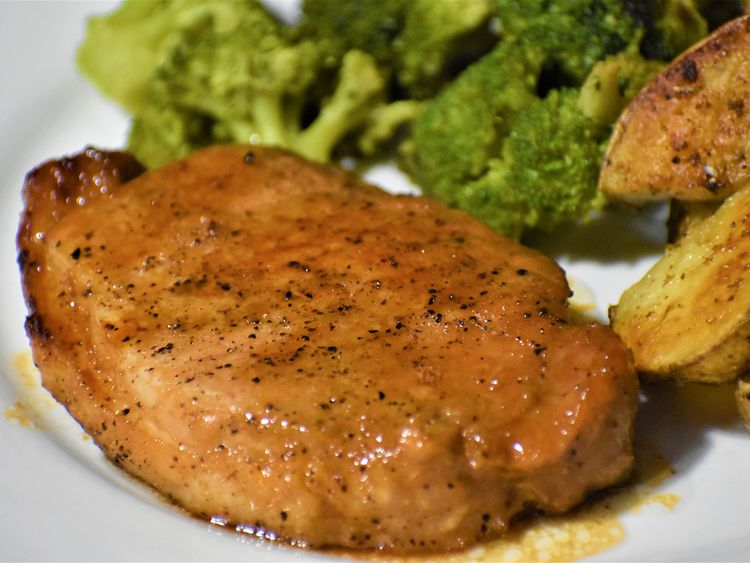

Honey Garlic Pork Chops

Description
A quick and simple grilled pork chop that everyone will love featuring a
simple and easy glaze made with ketchup, honey, soy sauce, and garlic.
When you're in need of a quick and easy dinner that the whole family will
love, look no further than pork chops. This 5-star grilled pork chop
recipe has reviewers' mouths watering thanks to the spectacular
honey-garlic glaze — but the 30-minute fridge-to-table time is also a perk
too.
Ingredients
- 1/2 cup ketchup
- 2 2/3 tablespoons honey
- 2 tablespoons low-sodium soy sauce
- 2 cloves garlic, crushed
- 6 (4 ounce) (1-inch thick) pork chops
Directions
-
Preheat grill for medium heat and lightly oil the grate. Gather
ingredients.
-
Whisk ketchup, honey, soy sauce, and garlic together in a bowl to make a
glaze.
-
Sear the pork chops on both sides on the preheated grill. Lightly brush
glaze onto each side of the chops as they cook; grill until no longer
pink in the center, about 7 to 9 minutes per side. An instant-read
thermometer inserted into the center should read 145 degrees F (63
degrees C).
- Serve hot and enjoy!
Home